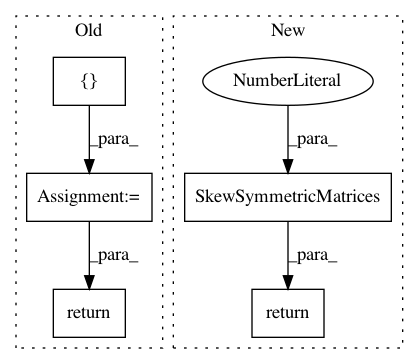

8197e2081a1d6f119fcefc748f3644b71adafcc3,geomstats/geometry/special_orthogonal.py,_SpecialOrthogonal2Vectors,skew_matrix_from_vector,#Any#,391
Before Change
skew_mat : array-like, shape=[..., n, n]
Skew-symmetric matrix.
basis = gs.array([[0., 1.], [-1., 0.]])
skew_mat = gs.einsum("...i,kl->...kl", vec, basis)
return skew_mat
@staticmethod
def vector_from_skew_matrix(skew_mat):
Derive a vector from the skew-symmetric matrix.
After Change
skew_mat : array-like, shape=[..., n, n]
Skew-symmetric matrix.
return SkewSymmetricMatrices(2).matrix_representation(vec)
@staticmethod
def vector_from_skew_matrix(skew_mat):
Derive a vector from the skew-symmetric matrix.
In pattern: SUPERPATTERN
Frequency: 3
Non-data size: 5
Instances
Project Name: geomstats/geomstats
Commit Name: 8197e2081a1d6f119fcefc748f3644b71adafcc3
Time: 2020-11-20
Author: nicolas.guigui@inria.fr
File Name: geomstats/geometry/special_orthogonal.py
Class Name: _SpecialOrthogonal2Vectors
Method Name: skew_matrix_from_vector
Project Name: geomstats/geomstats
Commit Name: 8197e2081a1d6f119fcefc748f3644b71adafcc3
Time: 2020-11-20
Author: nicolas.guigui@inria.fr
File Name: geomstats/geometry/special_orthogonal.py
Class Name: _SpecialOrthogonal3Vectors
Method Name: vector_from_skew_matrix
Project Name: geomstats/geomstats
Commit Name: 8197e2081a1d6f119fcefc748f3644b71adafcc3
Time: 2020-11-20
Author: nicolas.guigui@inria.fr
File Name: geomstats/geometry/special_orthogonal.py
Class Name: _SpecialOrthogonal3Vectors
Method Name: skew_matrix_from_vector